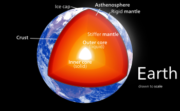

Our home planet is the third planet from the Sun, and the only place we know of so far that’s inhabited by living things. While Earth is only the fifth largest planet in the solar system, it is the only world in our solar system with liquid water on the surface. Just slightly larger than nearby Venus, Earth is the biggest of the four planets closest to the Sun, all of which are made of rock and metal. The name Earth is at least 1,000 years old. All of the planets, except for Earth, were named after Greek and Roman gods and goddesses. However, the name Earth is a Germanic word, which simply means “the ground.”
Galileo: Galileo didn't have enough fuel to fly directly to Jupiter, but the spacecraft borrowed energy from Venus and Earth to make the long trip. Mission planners designed a flight path nicknamed "VEEGA"—Venus-Earth-Earth Gravity Assist. Galileo would slingshot once by Venus, and twice by Earth, gathering enough momentum to reach distant Jupiter. First stop: Venus. The Galileo team tried out the spacecraft's instruments and study of the thick, toxic clouds that cloak our sister planet. Flying by our home planet twice, Galileo saw the Earth and Moon together—as someone from another world might view us.

With a radius of 3,959 miles (6,371 kilometers), Earth is the biggest of the terrestrial planets, and the fifth largest planet overall.
From an average distance of 93 million miles (150 million kilometers), Earth is exactly one astronomical unit away from the Sun because one astronomical unit (abbreviated as AU), is the distance from the Sun to Earth. This unit provides an easy way to quickly compare planets' distances from the Sun.
It takes about eight minutes for light from the Sun to reach our planet.
When the solar system settled into its current layout about 4.5 billion years ago, Earth formed when gravity pulled swirling gas and dust in to become the third planet from the Sun. Like its fellow terrestrial planets, Earth has a central core, a rocky mantle and a solid crust.
Earth is composed of four main layers, starting with an inner core at the planet's center, enveloped by the outer core, mantle and crust. The inner core is a solid sphere made of iron and nickel metals about 759 miles (1,221 kilometers) in radius. There the temperature is as high as 9,800 degrees Fahrenheit (5,400 degrees Celsius). Surrounding the inner core is the outer core. This layer is about 1,400 miles (2,300 kilometers) thick, made of iron and nickel fluids. In between the outer core and crust is the mantle, the thickest layer. This hot, viscous mixture of molten rock is about 1,800 miles (2,900 kilometers) thick and has the consistency of caramel. The outermost layer, Earth's crust, goes about 19 miles (30 kilometers) deep on average on land. At the bottom of the ocean, the crust is thinner and extends about 3 miles (5 kilometers) from the sea floor to the top of the mantle. s
Our solar system is the only place we know of that harbors life, but the farther we explore the more we find potential for life in other places. Both Jupiter’s moon Europa and Saturn’s moon Enceladus have global saltwater oceans under thick, icy shells.
There are more than 150 known moons in our solar system and several
more awaiting confirmation of discovery. Of the eight planets, Mercury
and Venus are the only ones with no moons. The giant planets grab the
most moons. Jupiter and Saturn have long lead our solar system’s moon
counts.
In some ways, the swarms of moons around these worlds resemble mini
versions of our solar system. Pluto, smaller than our own moon, has
five moons in its orbit, including the Charon, a moon so large it
makes Pluto wobble. Even tiny asteroids can have moons. In 2017,
scientists found asteroid 3122 Florence had two tiny moons.